개관
미래 데이터의 중요성
4차 산업혁명의 ‘원유’
다양한 소스들로부터 데이터 생성: 전지구적 개인과 환경에 대한 상세한 정보 발생
- 인터넷 & 통신 (SNS, 사진, 위치, 장소, 유동인구, 상품거래, 물류)
- 사물인터넷 (IoT), 로봇, 웨어러블 기기
- CCTV
- 스마트 팩토리, 파밍
- 게놈프로젝트, 생체정보, 의료/보건: 인류, 실시간
- 과학적 발견: 과학적 정보와 데이터의 공유; 생물학, 천문학, …
- 물리법칙의 발견, 약물의 합성, 생체 내 분자의 상호작용의 메커니즘 규명; 알파폴드
- 자율주행차량: 내부, 외부
- 금융정보 및 흐름
- 사회 지표 활용: 고용, 직업, 연봉, 소비/활동 패턴, 만족도 조사, 취약 계층에 대한 정보, 우울증, 자살율, …
- 생성형 인공지능: 기계의 정보 생산
- AI companion: 개인 내면에 대한 정보
AI는 새로운 전기
“AI is the new electricity” by Andrew Ng
의료, 금융, 교통, 교육 등에서 AI가 전기처럼 ‘당연한 기반 기술’이 될 것이라 전망
- 범용 기술
전기가 특정 산업만 변화시킨 것이 아니라, 모든 산업(가정, 교통, 농업, 의료, 통신 등)에 확산되면서 사회 전체를 혁신했듯이, AI도 특정 영역(예: 음성 인식, 이미지 분석)뿐 아니라, 모든 산업 분야에 적용 가능
- 인프라 역할
전기는 다른 기술과 산업의 기반 인프라가 되었듯이, AI도 데이터와 컴퓨팅을 기반으로 다양한 응용 분야를 가능하게 하는 디지털 인프라로 작용
데이터 사이언스의 응용 사례
TED: How AI could empower any business by Andrew Ng
요약 by Claude 3.7 Sonnet
- AI가 현재는 대형 기술 기업들과 전문가들에게 주로 집중되어 있으며, 이는 과거 읽고 쓰는 능력이 소수 특권층에게만 있었던 상황과 유사합니다.
- 대규모 기술 기업들은 수백만 명의 사용자에게 적용할 수 있는 AI 시스템을 개발할 자원이 있지만, 작은 비즈니스들은 그렇지 못합니다.
- 지역 피자가게나 티셔츠 제조업체 같은 소규모 비즈니스들도 자신들의 데이터를 활용해 AI의 혜택을 받을 수 있어야 합니다.
- AI는 대규모 데이터셋만 필요하다는 통념과 달리, 소규모 비즈니스의 적은 데이터로도 유용하게 활용될 수 있습니다.
- 현재의 문제는 각 비즈니스가 너무 독특해서 모든 상황에 적용되는 일반적인 AI 솔루션이 없다는 점입니다.
- 새로운 AI 개발 플랫폼들은 코드 작성보다는 데이터 제공에 초점을 맞춰, 기술 지식이 적은 사람들도 자신만의 AI를 만들 수 있게 합니다.
- 이러한 AI 민주화는 부를 더 넓게 분배하고, 모든 사람이 자신에게 중요한 AI 시스템을 구축할 수 있게 하는 미래를 가능하게 할 것입니다.
Source: Data Science (The MIT Press Essential Knowledge Series), 2018, by John D. Kelleher & Brendan Tierney
영업 및 마케팅
- 웹사이트에서 고객의 구매 행동, 소셜 미디어의 댓글을 추적 고객의 선호도를 파악
- 월마트의 경우,
- 수 십년 넘게 매장의 재고 수준을 최적화했고, 2004년, 몇 주 전에 발생한 허리케인의 판매 데이터를 분석하여 “딸기 팝타트”를 재입고
- 소셜 미디어 트렌드 및 신용카드 활동을 분석하여 신제품 출시 및 고객 경험 개인화/최적화
- 추천 시스템을 통해 사용자 취향에 맞는 제품을 추천, 틈새 상품의 판매도 촉진
공공기관
- 미국의 경우, 정부 주도의 데이터 과학 이니셔티브 발족; 특히, 보건 분야에 큰 투자
- Precision Medicine Initiative (2015)
- 인간 게놈 시퀀싱과 데이터 과학을 결합하여 개별 환자를 위한 약물을 설계
- 백만 명 이상의 자원봉사자로부터 환경, 라이프스타일, 생물학적 데이터를 수집하여 정밀 의학을 위한 세계 최대의 데이터를 구축
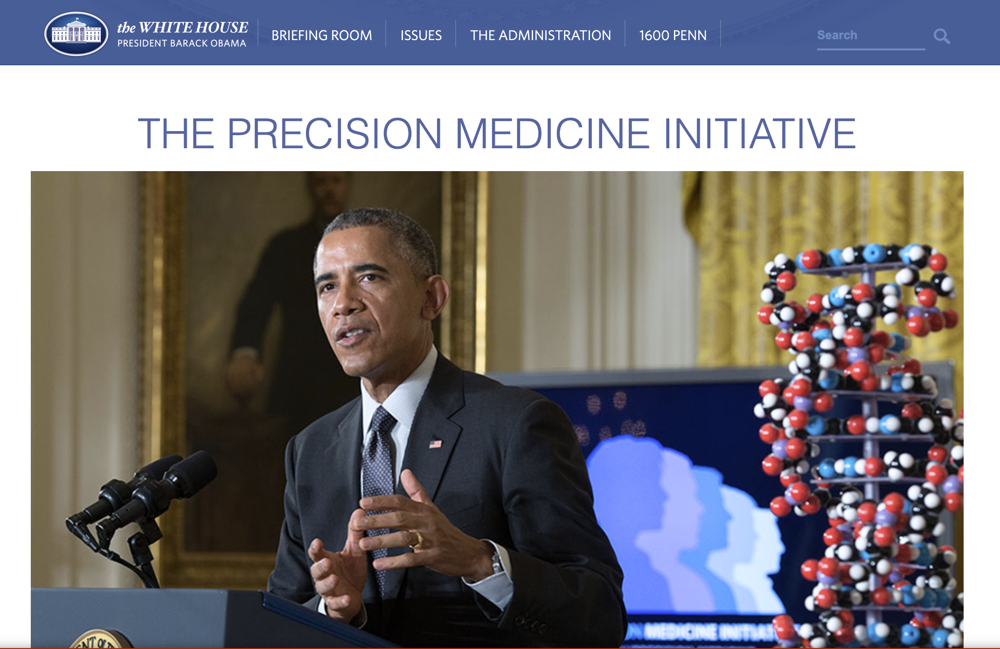
- Precision Medicine Initiative (2015)
- 도시 운영 및 설계
- 스마트 시티: 환경, 에너지, 교통 흐름을 추적, 분석, 제어
- 장기적 도시 계획 수립에 정보를 축적
- 치안 및 범죄 예측
- Police Data Initiative
- 범죄 다발 지역과 재범률을 예측
- 시민 단체들의 비판도 존재
- 시카고 경찰; 1주일 이내의 범죄 예측
- 비판: Event-level prediction of urban crime reveals a signature of enforcement bias in US cities. Nature human behaviour
- Police Data Initiative
- 각종 보험료 산정
- 과거의 데이터를 분석하여, 보험금을 지급할 확률을 계산하고 보험료를 산정
스포츠
- Moneyball: The Art of Winning an Unfair Game
- 야구에서 전통적으로 강조되던 도루, 타점, 타율의 통계보다 출루율과 장타율이 더 나은 척도였음
- “저평가된” 선수, 승리에 기여하는 능력에 비해 낮은 급여를 받는 선수를 찾아 영입
- Sabermetrics: sciecne of baseball
- 데이터 분석을 통해 시장에서 어떤 조직이 우위를 점할 수 있는 방법을 제시
- 적절한 속성을 찾는 것의 중요성
사회적 파장
유토피아 vs. 디스토피아
초연결성, 투명성 vs. 완전한 감시와 통제
- 개인적 활동, 소비, 대화, 사고 등이 수집되고 저장
- 사회 질서와 안전 보장
- 사회 구성원에 대한 감시와 통제
개인화된 서비스 vs. 설득/유혹/조작
- 개인의 취향, 선호, 특성 등이 활용
- 개인화된 맞춤형 서비스 가능
- 깊은 내면, 심리, 정신의 해킹
- 비의도적인 컨텐츠의 편향; 다양성 상실, 사회적 양극화
- 의도적인 조작; 선거 개입
개별성/자율성 vs. 피동적/비주체적
- 개인이 decision maker가 아닌 모든 것을 outsourcing
- 스스로가 고민, 선택 필요없이 최적의 대안을 제공
- 자신과 세상에 대한 고민과 탐색 상실
기계와의 교감 vs. 인간관계의 변질/소외, 현실/자연과의 단절
- 나를 가장 잘 하는 존재가 나를 위해 최선의 서비스를 제공
- 나 중심의 인간관계가 학습; 현실에는 존재할 수 없는 가상 존재와 교류, 타인의 이해와 배려 상실
- 현실의 사람과의 관계는 더 이상 만족스럽지 못함; 현실은 이해 충돌과 타협, 협력의 복잡한 다이내믹으로 버거움
- 가상 세계에서 빠져들수록 자연과 세상과의 교류 감소
Happy Pills vs. Existential Vacuum
- 삶의 고통과 슬픔을 제거
- 즐거움, 쾌락이 최소한의 부작용으로 최적으로 제공
- 삶의 의미를 탐구, 탐색, 성찰할 수 있는 기회 상실
- 기계에 의한 노동의 대체가 인간의 가치체계를 재고할 기회를 제공?
정보와 인간에 대한 신뢰 약화와 사회적 연대, 문명 붕괴
- 기계의 정보 생산과 활동은 인간/현실에 대한 불신을 양상
- 특히 agency를 획득한 AI는 목적 달성을 위해 인간과 이해충돌이 발생할 수 있음.
- 사회적 연대와 협력, 문명은 서로에 대한 신뢰를 기반으로 상호호혜적(reciprocity) 관계에서 유지
- 현재, 화폐나 경제 시스템이 작용하는 것은 이에 대한 믿음에 기초하고 있음.
- 적극적으로는, 컬트와 같은 정교한 믿음체계를 조직해 집단을 콘트롤할 수 있음.
자연과의 조화 vs. 생태계의 파괴
- 온난화, 폐기물, 식량, 자원, 에너지 문제 등의 해결책을 제공
- Radical abundance? Demis Hassabis On The Future of Work in the Age of AI
- 대량 생산과 소비가 지구 생태계의 균형과 공존할 수 있는가?
Ilya Sutskever, University of Toronto honorary degree recipient


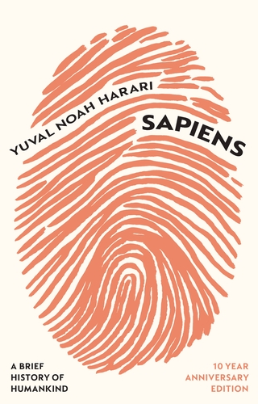
Yuval Noah Harari: An Urgent Warning They Hope You Ignore.
The Social Dilemma (2020)
Netflix documentary
주요 테마:
- 새로운 전쟁 시대와 글로벌 질서의 붕괴: 하라리는 현재를 새로운 전쟁 시대라고 규정하며, 기존의 자유주의적 국제 질서가 약화되고 각 국가가 자국 이익만을 추구하는 경향이 심화되면서 전쟁 위험이 증가하고 있다고 경고합니다. 그는 우크라이나 전쟁, 중동 분쟁 등을 예시로 들며 “10년 전 우리는 인류 역사상 가장 평화로운 시대에 있었지만, 불행히도 이 시대는 끝났다”고 단언합니다. 만약 글로벌 질서를 재건하지 못한다면 더 많은, 그리고 더 심각한 전쟁이 발생할 것이라고 우려합니다. “만약 모든 국가가 그렇게 생각한다면, 그들 간의 관계를 무엇이 규제하는가? 질서에 대한 대안은 단순히 무질서이며, 이것이 바로 우리가 처한 상황이다.”
- 인공지능(AI) 혁명의 심각한 위험성 과소평가: 하라리는 현재 AI 혁명의 규모와 위험성이 제대로 인식되지 못하고 있다고 지적합니다. 그는 AI가 이전의 기술 혁명(인쇄술, 산업혁명 등)과는 근본적으로 다르다고 강조하며, 그 이유는 AI가 스스로 결정을 내리고 새로운 아이디어를 창조할 수 있는 최초의 기술이기 때문이라고 설명합니다. “AI는 인쇄기와도, 19세기 산업혁명과도 전혀 다르다. 훨씬 더 거대하다. AI와 이전의 우리가 발명한 모든 기술 사이에는 근본적인 차이가 있다. 그 차이는 역사상 최초로 스스로 결정을 내리고 스스로 새로운 아이디어를 창조할 수 있는 기술이라는 점이다.” 그는 AI가 인간의 의사결정 능력을 잠식하고, 금융, 전쟁 등 중요한 영역에서 인간이 ’꼭두각시’가 될 수 있는 위험성을 경고합니다.
- 인간의 허구적 믿음 체계의 양면성: 하라리는 인간이 지구를 지배할 수 있었던 이유는 개인의 천재성 때문이 아니라, 허구적 이야기를 창조하고 믿음으로써 대규모 협력이 가능했기 때문이라고 주장합니다. 국가, 종교, 기업, 심지어 돈까지도 인간이 만들어낸 ‘허구’이며, 이러한 허구는 협력의 강력한 기반이 되지만 동시에 현실과의 단절을 초래하고 조작에 취약하게 만들 수 있는 위험성을 내포합니다. “우리가 현실이라고 믿는 많은 것이 허구이며, 허구가 인간 역사에서 그토록 중요한 이유는 우리(인간)가 행성(지구)을 지배하기 때문이다… 우리가 그렇게 할 수 있는 이유는 다른 어떤 동물보다 훨씬 더 잘 협력할 수 있기 때문이다.” 그는 현재의 전쟁 역시 영토나 식량이 아닌 서로 다른 ’이야기’, 즉 신화 체계 간의 충돌에서 비롯되는 경우가 많다고 지적하며, AI가 진실과 허구를 구별하는 능력을 향상시켜 줄 것이라는 환상 역시 또 다른 허구라고 경고합니다.
- 생명공학과 AI를 통한 인류의 변환 가능성: 하라리는 가까운 미래에 인류가 생명공학, AI, 뇌-컴퓨터 인터페이스 등의 기술을 통해 현재의 ’호모 사피엔스’와는 완전히 다른 존재로 스스로를 변화시킬 가능성을 제기합니다. 그는 이러한 변화가 필연적일 수 있지만, 신중하고 책임감 있게 진행되지 않을 경우 심각한 불평등과 예측 불가능한 결과를 초래할 수 있다고 경고합니다. “우리는 생명공학과 AI, 뇌-컴퓨터 인터페이스를 사용하여 스스로를 너무나 많이 변화시켜 현재의 호모 사피엔스와 오늘날 우리가 침팬지나 네안데르탈인과 다른 정도보다 훨씬 더 다른 존재가 될 수도 있다.” 그는 이러한 기술이 소수의 엘리트에게만 먼저 제공되어 경제적 불평등이 생물학적 불평등으로 이어지고, 인류가 ’슈퍼휴먼’과 그렇지 못한 존재로 분열될 위험성을 우려합니다. 또한, 이러한 ’업그레이드’가 실제로 인간의 번영에 도움이 될지 확신할 수 없으며, 오히려 공감 능력이나 정신적 깊이와 같은 중요한 가치를 훼손할 수 있다고 지적합니다.
- AI 시대의 일자리 변화와 사회적 불안: 하라리는 AI 혁명으로 인해 대부분의 기존 직업이 사라질 것이라고 예측하면서도, 새로운 직업이 등장할 것이라고 전망합니다. 그러나 그는 변화의 속도가 매우 빠르기 때문에 사람들이 끊임없이 재교육을 받아야 할 것이며, 이는 개인적, 사회적으로 큰 도전이 될 것이라고 강조합니다. 그는 특히 ’보편적 기본 소득’과 같은 아이디어가 국가적 차원에서만 논의될 경우, 글로벌 차원의 불평등 문제를 심화시킬 수 있다고 우려합니다. 또한, 미래 사회에 필요한 구체적인 기술을 예측하기 어렵기 때문에, 현재의 교육 시스템이 어떻게 변화해야 할지에 대한 근본적인 고민이 필요하다고 지적합니다.
- 인간의 자기 이해와 조작 가능성: 하라리는 인간이 더 이상 ’미스터리한 영혼’이 아닌 ’해킹 가능한 동물’이 되었다고 주장하며, AI와 같은 기술을 통해 인간의 행동을 예측하고 조작하는 것이 이전보다 훨씬 쉬워졌다고 경고합니다. 그는 자유 의지에 대한 믿음이 오히려 자기 성찰과 방어 능력을 약화시켜 조작에 더 취약하게 만들 수 있다고 비판합니다. 또한, 인간의 삶의 의미가 의사결정 능력에서 비롯된다는 점을 강조하며, AI가 점점 더 많은 결정을 대신하게 될 경우 인간의 삶의 의미가 퇴색될 수 있다고 우려합니다. 그는 특히 AI가 인간과의 친밀감을 모방하여 인간을 조종하는 새로운 형태의 조작에 대해 심각한 우려를 표명합니다.
- 행복의 주관성과 기술 발전의 한계: 하라리는 지난 수십만 년 동안 인류의 힘은 극적으로 증가했지만, 그에 비해 행복 수준은 크게 향상되지 않았다고 지적합니다. 그는 기술 발전만으로는 행복을 보장할 수 없으며, 행복은 인간의 내면세계, 즉 마음과 의식의 깊은 이해와 관련되어 있다고 강조합니다. 그는 불멸에 대한 인간의 열망 역시 사고, 질병 등 예기치 않은 사고로 인해 ‘영원한 삶의 가능성이 있지만 사고로 죽을 수 있는’ 불안한 상태를 초래할 수 있다고 경고합니다.
- 정보 과부하와 정신 건강의 위협: 하라리는 현대 사회의 정보 과부하가 개인의 정신 건강에 심각한 위협이 된다고 경고하며, 균형 잡힌 정보 섭취와 함께 명상 등을 통해 마음의 건강을 유지하는 것이 중요하다고 강조합니다. 그는 끊임없이 자극적인 정보에 노출될 경우 평화로운 마음을 유지하기 어려우며, 사회 전체의 평화에도 부정적인 영향을 미칠 수 있다고 지적합니다. 특히 소셜 미디어 알고리즘이 인간의 주의를 끌기 위해 경쟁적으로 더 자극적인 콘텐츠를 제공하고, 이로 인해 분노와 흥분이 만연하는 사회 현상에 대해 우려를 표명합니다. 그는 ’지루함’을 견디는 능력의 중요성을 강조하며, 지루함 속에서 평화로운 마음을 찾을 수 있다고 설명합니다.
결론 및 향후 과제:
유발 하라리는 이 인터뷰를 통해 현재 인류가 직면한 다양한 위협과 도전 과제를 심도 있게 분석하고 경고합니다. 그는 새로운 전쟁 시대의 도래, AI 혁명의 잠재적 위험성, 허구적 믿음 체계의 양면성, 생명공학과 AI를 통한 인류 변환의 가능성, 일자리 변화와 사회적 불안, 인간의 조작 가능성, 행복의 주관성, 그리고 정보 과부하와 정신 건강의 위협 등 다양한 주제를 포괄적으로 다루며, 인류의 미래에 대한 심각한 우려를 표명합니다.
그는 이러한 위협에 대처하기 위해서는 글로벌 질서를 재건하고, AI 기술 개발과 활용에 대한 신중한 논의와 규제가 필요하며, 인간의 자기 이해를 높이고 정신 건강을 유지하기 위한 노력이 중요하다고 강조합니다. 또한, 개개인이 문제 해결을 위해 적극적으로 참여하고 협력하는 것이 중요하며, 기술 발전의 속도에 압도되지 않고 인류의 가치와 번영을 위한 방향으로 나아가야 한다고 촉구합니다.
하라리의 경고는 우리가 직면한 현실을 냉철하게 인식하고 미래를 위한 책임감 있는 행동을 촉구하는 메시지로 해석될 수 있습니다. 그의 통찰력 있는 분석은 독자들에게 깊은 생각거리를 던져주며, 인류의 미래를 위한 중요한 논의를 촉발하는 계기가 될 것입니다.
다큐멘터리 The Social Dilemma (2020)의 메인 인물인 Tristan Harris의 몇몇 강연 및 인터뷰 요약
개요:
본 문서는 트리스탄 해리스의 강연 및 인터뷰 내용을 기반으로 작성되었으며, 현재 소수의 기술 기업들이 막대한 영향력을 행사하여 수십억 명의 사람들의 생각과 관심을 통제하는 현실과, 새롭게 등장한 생성형 인공지능(AI) 기술이 가져올 잠재적인 위험 및 해결책에 대해 심층적으로 다룹니다. 해리스는 소셜 미디어의 작동 방식과 그로 인한 사회적 문제점을 지적하며, AI 기술 역시 동일한 방식으로 인류에게 심각한 위협이 될 수 있음을 경고합니다. 그는 이러한 문제에 대한 인식을 높이고, 기술 발전의 방향성을 재고하며, 새로운 규제 및 윤리적 시스템 마련의 시급성을 강조합니다.
주요 테마 및 핵심 아이디어:
1. 소수의 기술 기업의 영향력과 관심 경제:
극소수의 IT 기업에 근무하는 극소수의 사람들이 현재 10억 명 이상의 사람들의 생각을 마음대로 조종하고 있습니다. 이는 스마트폰의 설계 방식, 알림 메시지 등을 통해 무의식적으로 사람들의 생각과 행동을 유도하는 방식으로 이루어집니다.
“불과 극소수의 IT 기업에서 일하는 극소수의 사람들이 오늘날 자그마치 10억 명 사람들의 생각을 그들 마음대로 조종하고 있다는 것입니다.”
오늘날의 기술은 중립적이지 않으며, 모든 기술은 사용자의 관심을 끌기 위한 경쟁 속에서 발전합니다. 뉴스 웹사이트, 소셜 미디어, 게임, 심지어 명상 앱까지도 인간의 제한된 관심을 놓고 경쟁합니다.
“우리가 만드는 모든 기술은 한 가지 숨겨진 목적을 두고 발전해 나갑니다. 우리의 관심을 끌기 위해 경쟁하는 것이죠.”
인간의 관심을 끄는 가장 효과적인 방법은 인간의 심리를 이해하고 다양한 설득 기술을 동원하는 것입니다. 유튜브의 자동 재생, 스냅챗의 ‘스냅 스트리크’ 기능 등은 사용자의 참여와 중독을 유도하기 위해 설계된 사례입니다.
“사람들의 관심을 끄는 최고의 방법은 인간의 사고방식을 이해하는 겁니다. 그리고 거기에는 무수히 많은 설득 기술이 동원되죠.”
분노와 같은 감정은 사람들의 관심을 끄는 데 매우 효과적이며, 소셜 미디어 플랫폼은 이러한 감정을 활용하여 사용자들의 참여를 유도합니다.
“분노 또한 사람의 관심을 끄는 아주 탁월한 방법입니다. 분노는 선택할 수 있는 게 아니라 그냥 일어나는 감정이기 때문이죠.”
이러한 관심 경제 시스템은 돈 많은 광고주들의 영향력을 확대시키고, 거짓 정보가 확산되기 쉬운 환경을 조성합니다.
“돈 많은 사람이 조종실을 찾아와서 이렇게 말하는 거죠. ‘저 사람들의 머릿속에서 이런 생각을 하게 만들어주세요.’”
2. 소셜 미디어의 ’첫 번째 접촉’과 그 결과:
- 소셜 미디어는 인류와 AI의 ’첫 번째 접촉’과 유사했습니다. 사용자가 화면을 스와이프할 때마다 슈퍼컴퓨터가 수많은 다른 사용자의 데이터를 기반으로 최적화된 콘텐츠를 제공하는 방식은 초기 형태의 AI 시스템이었습니다.
- 소셜 미디어의 ’관심 극대화’라는 잘못된 인센티브는 정보 과부하, 둠 스크롤링, 외로움, 극단주의 심화, 가짜 뉴스 확산 등 ’문화의 기후 변화’와 같은 심각한 사회적 문제를 야기했습니다.
- 소셜 미디어 플랫폼 개발자들의 선의에도 불구하고, 잘못된 인센티브 구조는 의도치 않은 부정적인 결과를 초래했습니다.
“모두 선의로 이 일을 하고 있어요. 사람들은 더 나은 세상을 원하니까요. 다들 더 나은 세상을 진정으로 원합니다. […] 통제하지 못할 정도로 의도하지 않은 결과를 만드는 시스템이 문제인 거죠.”
3. 생성형 AI의 ’두 번째 접촉’과 잠재적 위험:
- 생성형 AI는 텍스트, 이미지, 음성 등 다양한 형태의 콘텐츠를 빠르게 생성할 수 있는 강력한 기술로, 소셜 미디어보다 훨씬 더 큰 파괴력을 가질 수 있습니다. 이는 인류와 AI의 ’두 번째 접촉’에 해당합니다.
- 생성형 AI 개발 경쟁은 ’능력 배포 경쟁’으로 이어져, 가짜 뉴스, 사기, 사이버 공격, 딥페이크 아동 포르노 등 사회에 심각한 위협을 초래할 수 있습니다.
- 생성형 AI는 개발자조차 예측하기 어려운 ‘창발적 능력’을 보이며, 이는 AI 통제의 어려움을 가중시킵니다. ’마음 이론’ 능력의 급격한 발전은 AI가 인간의 의도를 이해하고 속일 수 있는 가능성을 시사합니다.
- 현재 AI 개발 속도는 매우 빠르며, 안전 연구 및 규제 노력은 이에 크게 미치지 못하고 있습니다.
- 소셜 미디어의 전철을 밟아 생성형 AI 기술이 성급하게 배포될 경우, 아동에게 유해한 콘텐츠 노출, 사기 범죄 증가 등 심각한 사회적 문제가 발생할 수 있습니다. 스냅챗의 ‘My AI’ 기능은 이러한 우려를 보여주는 사례입니다.
4. 문제 해결을 위한 근본적인 변화:
- 인간의 취약성 인정: 인간은 설득에 취약하며, 무의식적으로 기술에 의해 조종될 수 있다는 사실을 인정하고, 이를 바탕으로 자신을 보호하기 위한 노력을 기울여야 합니다.
- 새로운 모델과 책임 시스템: 기술 기업들이 사용자의 이익을 투명하게 고려하고 책임감을 갖도록 하는 시스템 마련이 시급합니다. 윤리적인 설득은 설득하는 이의 목적과 설득당하는 이의 목적이 일치할 때만 가능합니다.
- 설계 전반의 혁신: 개인의 시간을 낭비하게 만드는 요소들을 제거하고, 사용자가 자신의 시간을 가치 있게 사용할 수 있도록 기술 설계를 근본적으로 바꿔야 합니다.
- 힘과 책임의 균형: 갓과 같은 강력한 기술력을 지혜, 사랑, 신중함과 같은 책임감 있는 태도와 균형을 맞춰야 합니다. 힘이 이해력이나 책임감보다 클 경우, 예측하지 못한 부정적인 결과가 발생할 수 있습니다.
- 건전한 인센티브 구조: 소셜 미디어와 같이 참여율 극대화에만 초점을 맞춘 사업 모델은 사회적 문제를 야기합니다. 사회 전체의 이익과 부합하는 새로운 인센티브 구조를 모색해야 합니다.
- 규제 및 국제 협력: AI 개발 및 배포에 대한 적절한 규제를 마련하고, 국제적인 협력을 통해 위험을 관리해야 합니다. 오픈소스 AI 개발에 대한 제한, AI 개발자 책임 강화, 안전 점검 및 비상 정지 계획 마련 등이 필요합니다.
- 사회적 적응 및 회복력 강화: AI로 인한 일자리 감소 등 사회적 충격에 대비하고, 시민들의 공론장 마련 및 합의 도출 시스템 구축을 통해 사회적 회복력을 강화해야 합니다.
결론:
트리스탄 해리스는 현재 기술 발전의 방향성이 인류에게 심각한 위협이 될 수 있음을 경고하며, 특히 생성형 AI 기술의 빠른 발전과 그 잠재적 위험에 대해 깊은 우려를 표합니다. 그는 소셜 미디어의 실패를 되풀이하지 않기 위해 인간의 취약성을 인정하고, 새로운 윤리적 모델과 책임 시스템을 구축하며, 기술 설계의 근본적인 혁신을 이루어야 한다고 강조합니다. 또한, AI 개발 경쟁에 대한 국제적인 조율과 적절한 규제 마련, 사회적 회복력 강화 노력을 통해 인류가 더 나은 미래를 향해 나아갈 수 있다고 역설합니다. 그의 강연은 AI 기술의 양면성을 인식하고, 미래 사회의 지속 가능한 발전을 위한 심층적인 논의와 적극적인 행동을 촉구합니다.
Data Science
- Artificial intelligence (인공 지능)
- Machine learning (기계 학습)
- Deep learning (심층 학습)
- Data mining (데이터 마이닝)
- Statistical learning (통계적 학습)
소프트웨어 개발
데이터에 기반한 분석 위해 작동하도록 프로그래밍을 하여 운영되도록 하는 일
주로 전통적인 컴퓨터 사이언스의 커리큘럼에 의해 트레이닝
- 유튜브의 영상 추천
- 페이스북의 친구 매칭
- 스팸메일 필터링
- 자율주행
데이터 분석
하나의 구체적인 질문에 답하고자 함
다양한 소스의 정제되는 않은 데이터를 통합하거나 가공하는 기술이 요구
- DNA의 분석을 통해 특정 질병의 발병 인자를 탐색
- 유동인구와 매출을 분석해 상권을 분석
- 어떤 정책의 유효성을 분석하여 정책결정에 공헌
- 교통 흐름의 지연이 어떻게 발생하는지를 분석, 해결책 제시
Skills
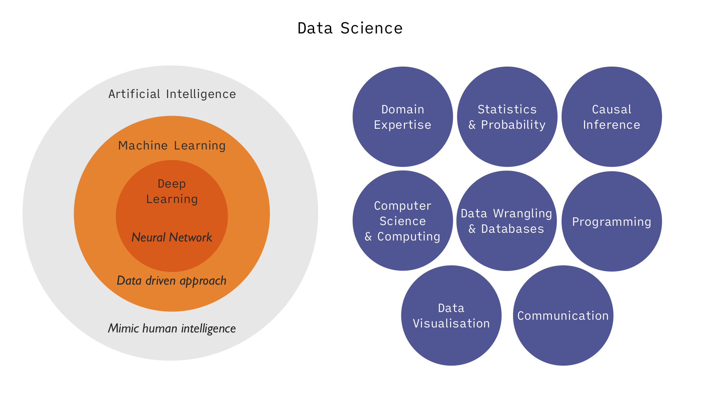
- Domain knowledge
- 해결하려는 문제에 대한 이해없이 단순한 알고리즘만으로 “one size fits all”은 효과적이지 않음
- 추상화된 현실에 대한 모형은 수많은 가정/사전 지식(prior knowledge)을 전제하고 있음.
- 각 분야의 전문 지식은 데이터가 발생되는 과정, 데이터의 특성, 데이터의 의미를 이해하는데 필수적
- Ethics
- 데이터를 합법적이고 적절하게 사용하려면 규정을 이해하고, 자신의 업무에 미치는 영향과 사회에 미치는 파급력 대한 윤리적 이해가 필요
- 배출(exhaust) 데이터: 어떤 목적을 위해 데이터를 얻는 과정에서 얻어지는 부산물
- 소셜 미디어: 사용자가 다른 사람들과 소통할 수 있도록 도움
- 공유된 이미지, 블로그 게시물, 트윗, 좋아요 등으로부터
- 누가/얼마나 많이 보았는지/좋아요/리트윗을 했는지 등을 수집
- 아마존 웹사이트: 다양한 물건을 편리하게 구매할 수 있도록 도움
- 사용자가 장바구니에 어떤 품목을 담았는지, 사이트에 얼마나 오래 머물렀는지, 어떤 다른 품목을 보았는지 등을 수집
- 메타데이터(metadata)
- 통화 내역만으로 많은 민감한 정보을 유추할 수 있음
- 알코올 중독자 모임, 이혼 전문 변호사, 성병 전문 병원 등
- 소셜 미디어: 사용자가 다른 사람들과 소통할 수 있도록 도움
- 한편, 서비스와 마케팅을 타겟팅할 수 있는 잠재력
- 배출(exhaust) 데이터: 어떤 목적을 위해 데이터를 얻는 과정에서 얻어지는 부산물
- 데이터를 합법적이고 적절하게 사용하려면 규정을 이해하고, 자신의 업무에 미치는 영향과 사회에 미치는 파급력 대한 윤리적 이해가 필요
- Wrangling
- 데이터 소스는 다양한 형식으로 존재
- 통합, 정리, 변환, 정규화 등의 작업이 요구
- data munging, data wrangling, data cleaning, data preparation, data preprocessing 등으로 불림
- Database & computer science
- 수집된 데이터가 저장되고, 가공/추출된 데이터의 재저장 등 데이터베이스와의 소통할 수 있는 기술
- 다양해지고 방대해진 빅데이터를 저장/배포하기 위한 도구를 활용 능력
- ML 모델을 이해하고 개발하여 제품의 출시, 분석, 백엔드 애플리케이션에 통합할 수 있는 기술 등
- Visualisation
- 작업 프로세스의 모든 과정에 관여
- 데이터를 탐색하거나,
- 데이터의 의미를 효과적으로 전달
- 작업 프로세스의 모든 과정에 관여
- Statistics & Probability
- 데이터 과학 프로세스 전반에 걸쳐 사용됨
- 초기 수집과 조사
- 다양한 모델과 분석의 결과를 해석
- 의사결정에 활용
- 데이터 과학 프로세스 전반에 걸쳐 사용됨
- Machine Learning
- 데이터로부터 패턴을 찾기 위한 다양한 알고리즘을 사용
- 응용 측면에서는
- 수많은 알고리즘에 대해 가정, 특성, 용도, 결과의 의미, 적용가능한 유형의 데이터 등을 파악
- 해결할 문제와 데이터에 가장 적합한 알고리즘을 파악
- Causal Inference
- Machine learning이 주로 변수들 간의 연관성으로부터 예측모형에 집중하는 반면,
- 인과추론은 진실된 인과적 관계를 파악하여 현상을 올바로 이해하고자 함
- 인과적 모델을 통해 (새로운) 환경/현실에 대해 적응적으로 대응할 수 있는 모델을 구축할 수 있음
- Communication
- 데이터에 담긴 스토리를 효과적으로 전달하는 능력
- 분석을 통해 얻은 인사이트, 조직 내 목적에 어떻게 부합하는지, 조직의 기능에 미칠 수 있는 영향 등을 파악
응용/비즈니스에서 정형적인 절차
Phases of the CRISP-DM (CRoss-Industry Standard Process for Data Mining)
Source: Chapman et al., 2000
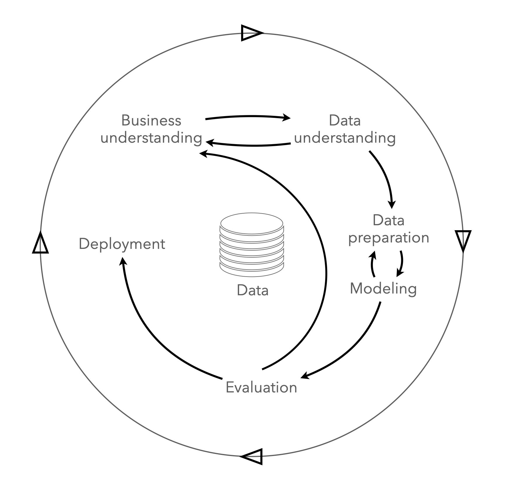
{kind=link}
Generic tasks of the CRISP-DM reference model
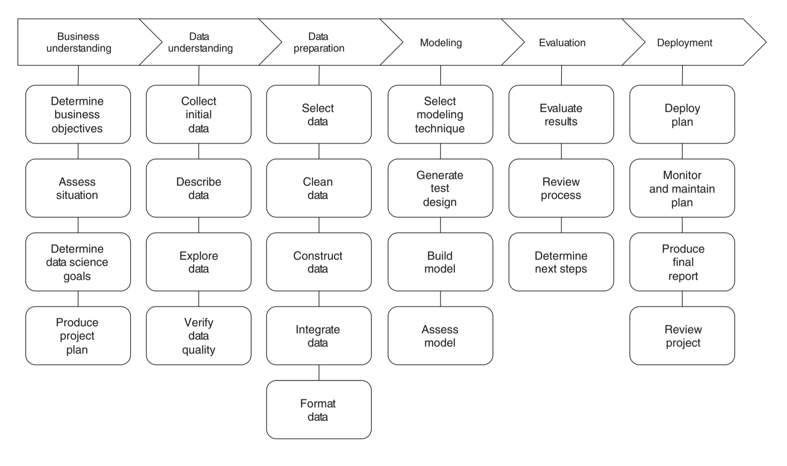
{kind=link}
비즈니스의 이해와 데이터의 이해
- 프로젝트의 목표를 정의하고, 비즈니스 문제를 이해하는 것
- 어떤 데이터를 수집하는 것이 유용한지, 어떤 데이터가 수집 가능한지 등을 탐색
데이터 준비와 모델링
- 노이즈와 비정형화된 데이터를 정제하고, 모델링을 위한 데이터를 준비
- 데이터로부터 의미있는 패턴(signal vs. noise)과 통찰을 찾기 위해 다양한 모델을 검토하고 실행
모델 평가와 배포
- 모델링 성능을 평가하고 개선, 모델을 배포
- 실제 환경에서는 훈련/평가을 위해 사용된 데이터가 보진 못한 새로운 데이터에 적용됨으로 모델의 성능을 지속적으로 모니터링
데이터 질의 중요성
- 2016년 데이터 과학자를 대상으로 한 설문조사(CrowdFlower report, 2016)
- 데이터 준비(데이터 수집, 클린닝)에 79%의 시간이 소요
- 프로젝트의 초점이 명확하고, 그에 맞는 올바른 데이터가 수집되었는지, 모델이 프로젝트의 목표에 잘 부응하는지 중요!
- Garbage in, garbage out
{kind=link}
{kind=link}
Source: Cleaning Big Data
표준 비즈니스 영역에서의 데이터 사이언스 작업
Source: Data Science (The MIT Press Essential Knowledge Series), 2018, by John D. Kelleher & Brendan Tierney
- Clustering
- Anomaly detection
- Association-rule mining
- Prediction: classification & regression
1. Clustering
Who Are Our Customers?
- 클러스터링을 통해 타깃 고객을 더 세분화된 군집으로 분류하여 마케팅 캠페인의 타겟을 명확히 정의할 수 있음
- Meta S. Brown (2014)의 보고서에 따르면,
- Soccer Moms?
- 탐색적 clustering을 통해 고객 세그먼트를 정의
- 어린이집에 다니는 어린 자녀를 둔 전업주부
- 고등학생 자녀 둔 파트타임으로 일하는 엄마
- 음식과 건강에 관심이 많지만 자녀가 없는 여성
- Meta S. Brown (2014)의 보고서에 따르면,
- 클러스터링을 통해 얻은 고객 세그먼트에 페르소나를 부여
- 각 특성에 맞는 캠페인 전략을 수립
- 작고 집중된 고객 클러스터를 발견
- 많은 매출을 창출하는 고객이 포함된 클러스터에 집중
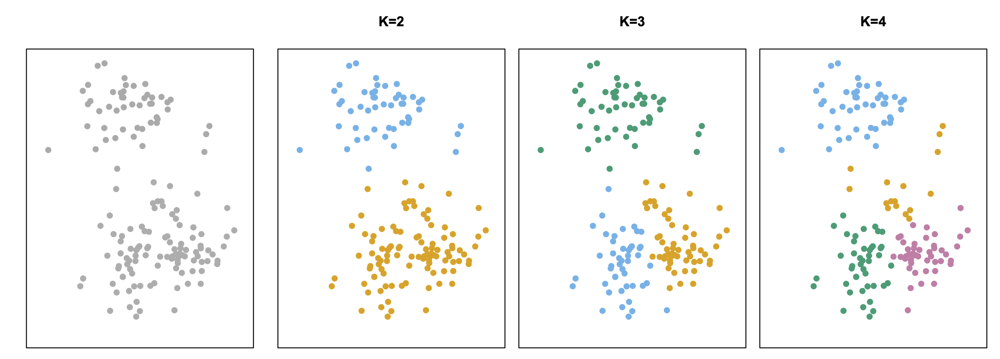
Source: Introduction to Statistical Learning by James et al.
- 클러스터링을 위해 사용할 수 있는 속성들: 어떤 속성을 포함하고 어떤 속성을 제외할지 결정하는 것이 중요!
- 인구통계학적 정보(연령, 성별 등)
- 위치(우편번호, 시골 또는 도시 주소 등)
- 거래 정보(예: 고객이 어떤 제품이나 서비스를 추구했는지)
- 고객이 된 지 얼마나 되었는지
- 로열티 카드 회원인지
- 제품을 반품하거나 서비스에 대해 불만을 제기한 적이 있는지 등
{kind=link}
- 프로젝트의 데이터 이해 단계에서 탐색 도구로 자주 사용됨
- 구체적인 예로,
- 추가 지원이 필요하거나 다른 학습 접근 방식을 선호하는 학생 그룹을 식별
- 생물 정보학에서 마이크로어레이 분석에서 유전자 서열을 분석
2. Anomaly detection
Is This Fraud?
- 잠재적인 사기, 특히 금융 거래 행위를 식별하고 조사
- 예를 들어, 비정상적인 위치에서 발생한 거래
- 비정상적으로 많은 금액이 포함된 거래
- 어떤 면에서 클러스터링과 반대 개념
- 클러스터링: 유사한 인스턴스 그룹을 식별
- 이상 징후 탐지: 특별한 인스턴스를 식별
- 이상 징후는 드물다는 그 고유한 특징으로 인해 식별이 어려움
- 여러 가지 모델을 결합: 서로 다른 모델이 서로 다른 유형의 이상 징후를 포착
- 예를 들어, 4개의 모델 중 3~4개 모델에서 거래가 사기성 거래로 식별되는 경우
- 다양한 분야에서 활용
- 금융기관: 잠재적 사기 또는 자금 세탁 사례로 추가 조사가 필요한 금융 거래를 식별
- 보험기관: 회사의 일반적인 청구와 일치하지 않는 청구를 식별
- 사이버 보안: 해킹 가능성, 직원의 비정상적인 행동을 탐지하여 네트워크 침입을 식별
- 의료 분야: 의료 기록의 이상 징후를 식별하여 질병을 진단
- 사물 인터넷: 데이터를 모니터링하고 비정상적인 센서 이벤트의 발생을 감지, 조치
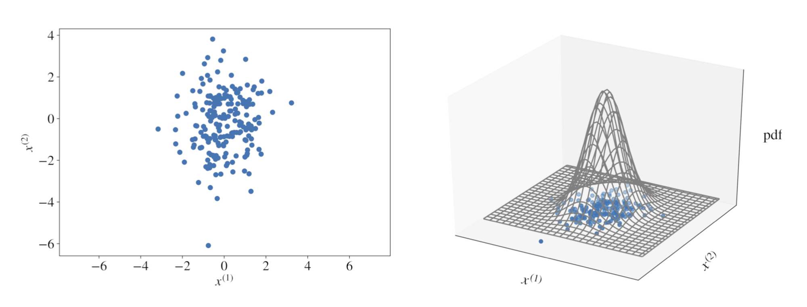
Source: The Hundred-Page Machine Learning Book, 2019 by Andriy Burkov
3. Association-Rule Mining
Do You Want Fries with That?
- 고객에게 다른 관련 제품이나 보완 제품, 혹은 잊어 있었던 제품을 제안
- 예를 들어, 슈퍼마켓에서 핫도그를 구매한 고객은 케첩과 맥주도 함께 구매할 가능성이 높음.
- 이에 맞춰 매장은 제품 레이아웃을 계획할 수 있음
- 온라인 마켓의 경우, 웹사이트의 배열, 추천, 광고 등을 설계
- 즉, 제품 간 연관성을 이해하고 교차 판매를 촉진
- 연관 규칙 마이닝은 데이터 세트의 속성(또는 열) 간의 관계를 살펴보는 데 중점을 둠: 속성 간의 상관관계
- 위의 경우, 고객의 장바구니 품목을 추적
- IF {핫도그, 케첩}, THEN {맥주}
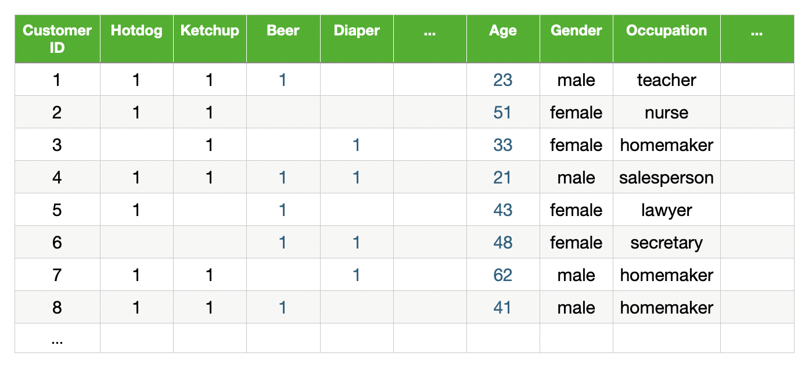 - 연관성 규칙의 신뢰도가 75%라면 고객이 핫도그와 케첩을 모두 구매한 경우 75%에서 맥주도 함께 구매했음을 의미
- 인구통계학적 정보를 연관성 분석에 포함하여 마케팅 및 타겟팅 광고에 활용
- 특히, 구매 기록 정보가 없는 경우
- IF 성별(남성) & 나이(35세 미만) & {핫도그, 케첩}, THEN {맥주}
- 장바구니 분석을 통해 다음과 같은 질문에 답을 탐색
- 마케팅 캠페인이 효과가 있었는지,
- 이 고객의 구매 패턴에 변화가 있었는지,
- 고객에게 중요한 인생 이벤트가 있었는지,
- 제품 위치가 구매 행동에 영향을 미치는지,
- 신제품으로 누구를 타깃팅해야 하는지 등
- 구매 경향의 시간적 요소를 더하면
- 적절한 시기에 (재)구매를 추천
- 유지보수, 부품 교체 일정
- 다양한 영역에서도 유용함
- 통신: 회사의 다양한 서비스를 패키지로 묶는 방법을 설계
- 보험: 상품과 보험금 청구 사이에 연관성을 파악
- 의료: 기존 치료법과 새로운 치료법 및 의약품 간에 상호 작용이 있는지 확인
- 추천 시스템(recommnder system)
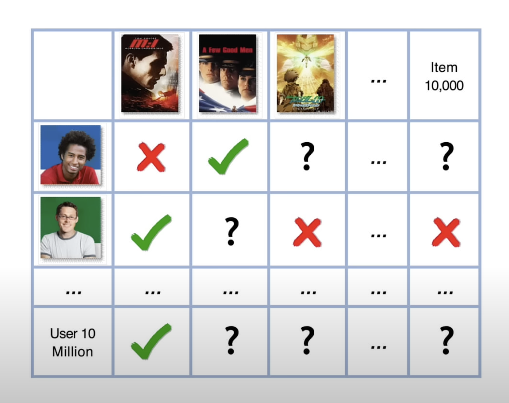

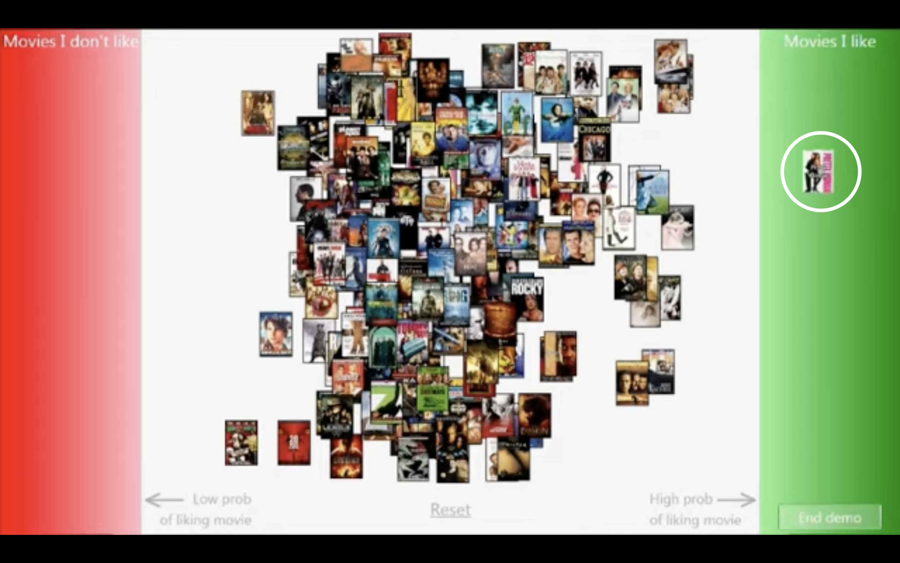
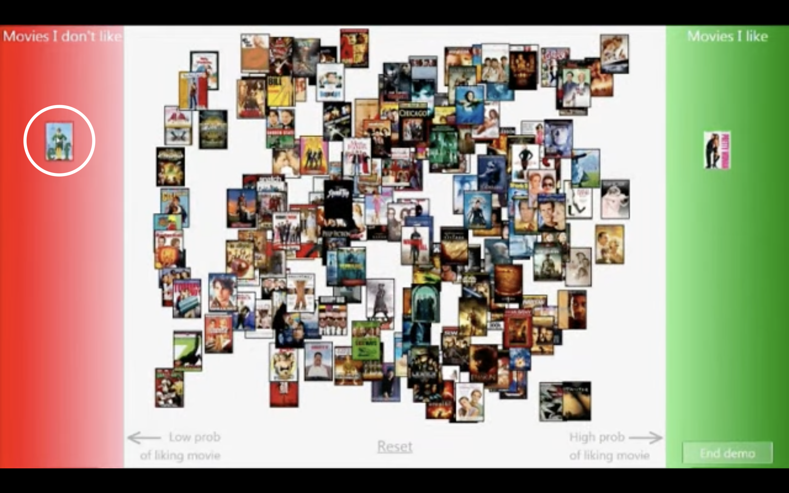
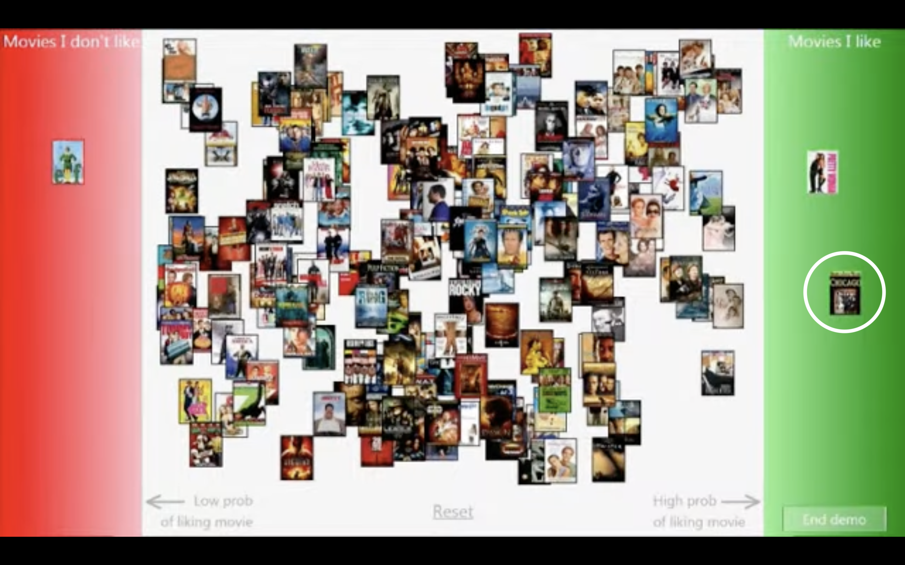
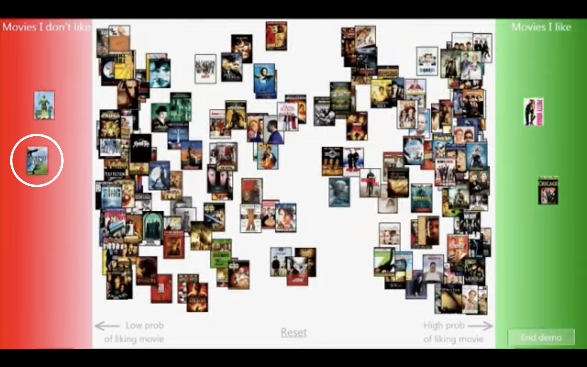
4-1. Classification (Prediction)
Churn or No Churn(고객 이탈), That Is the Question
- 개인의 행동 성향에 대한 모델링이 목표: 예, 광고 마케팅에 대한 반응, 서비스 탈퇴 등 다양한 행동 예측
- 휴대폰 서비스 회사의 고객 유지 필요성: 기존 고객 유지 비용 대비 신규 고객 유치 비용이 상대적 높음
- 이탈 가능성이 높은 고객 식별의 중요성: 유지 비용 최소화 및 이탈 예측을 통한 효율적인 혜택 제공 필요
- 이탈 예측의 의미와 활용: 서비스 이탈 예측을 통해 고객 이탈 가능성을 예측하고 효율적인 대응 가능
- 다양한 산업의 이탈 예측에 활용: 통신, 유틸리티, 은행, 보험 등에서의 이탈 예측을 통한 비즈니스 전략 개발 및 운영 향상
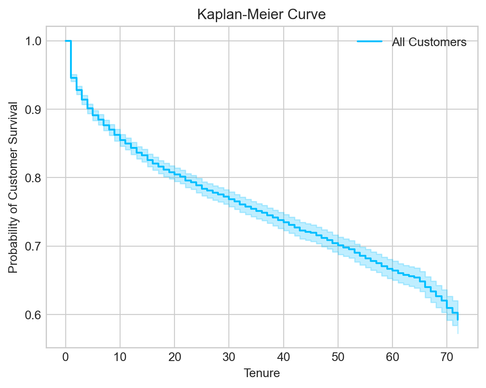
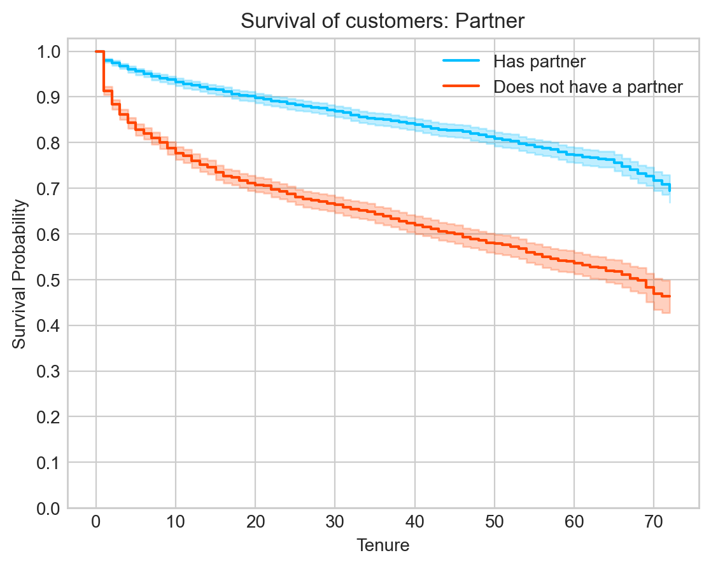
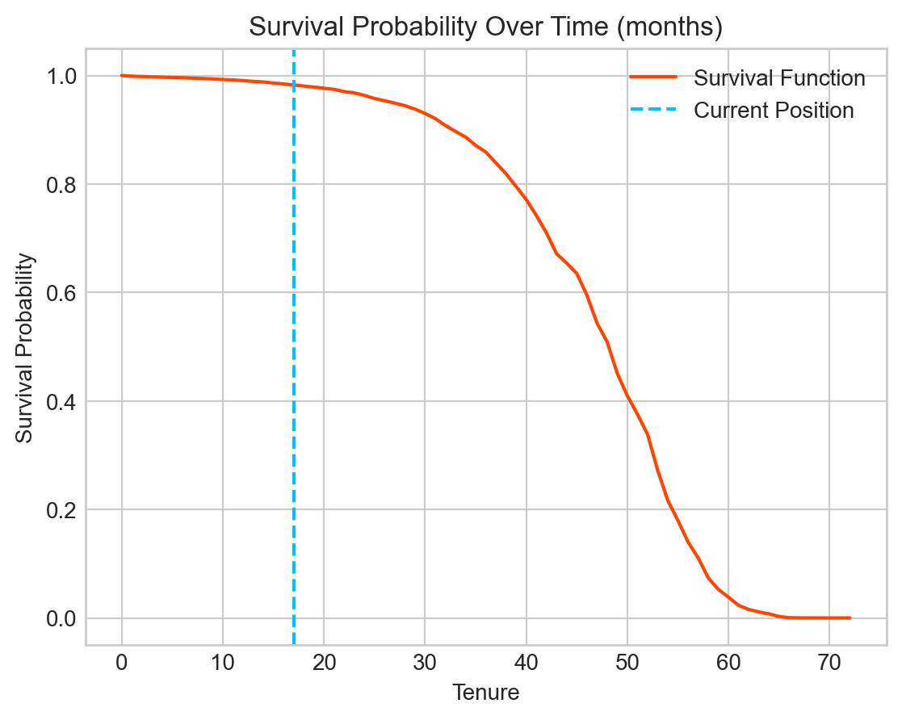
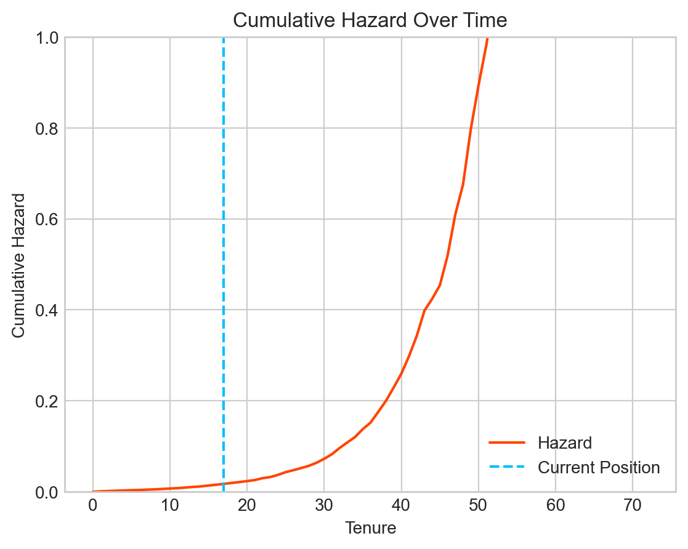
- Deep learning: 예측모형 중 하나
- 이미지 인식: 예. 손글씨 인식, 물체 인식, 영상 인식
- 생성형 모델: 적절한 단어, 소리, 이미지 예측
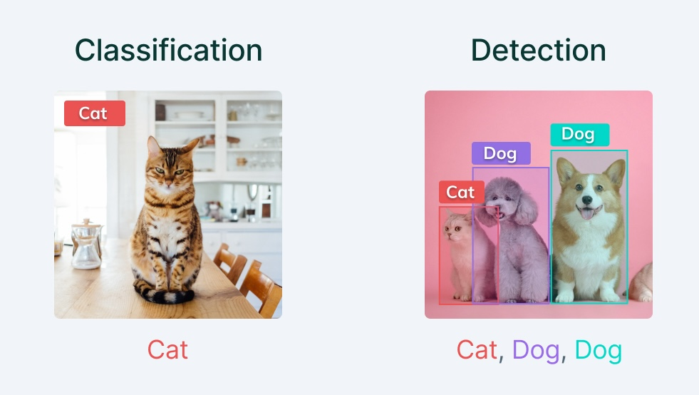
4-2. Regression (Prediction)
How Much Will It Cost?
- 앞서, 분류는 범주형 속성의 값을 추정하는 반면, 회귀는 연속적인 값을 추정
- 전통적인 통계적 모형의 근간
- 예를 들어, 주택의 “가격”을 예측하는 경우
- 주택의 크기, 방의 개수, 층수, 해당 지역의 평균 주택 가격, 해당 지역의 평균 주택 크기 등의 속성을 포함
- 자동차의 “가격”을 예측하려면
- 자동차의 연식, 주행 거리, 엔진 크기, 자동차 제조사, 문 개수 등의 속성을 포함
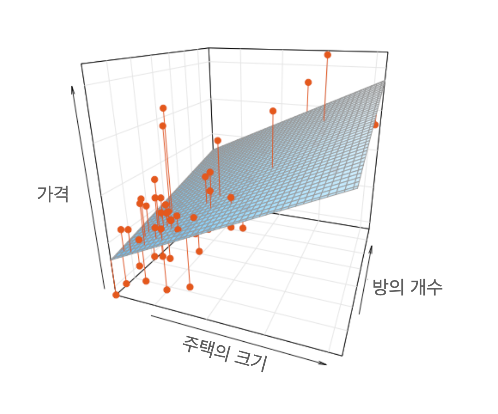